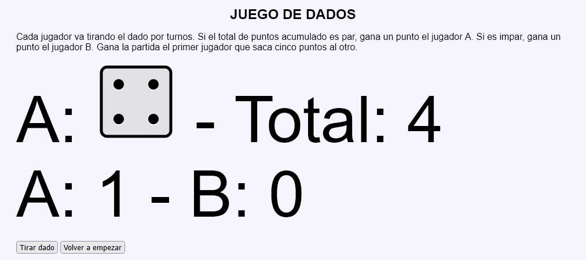
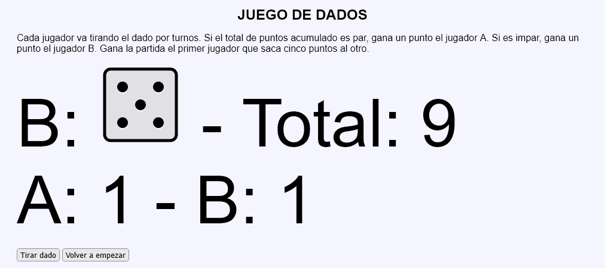
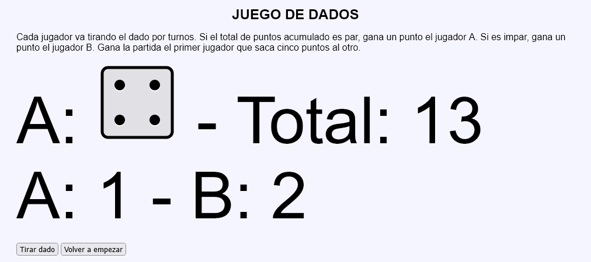
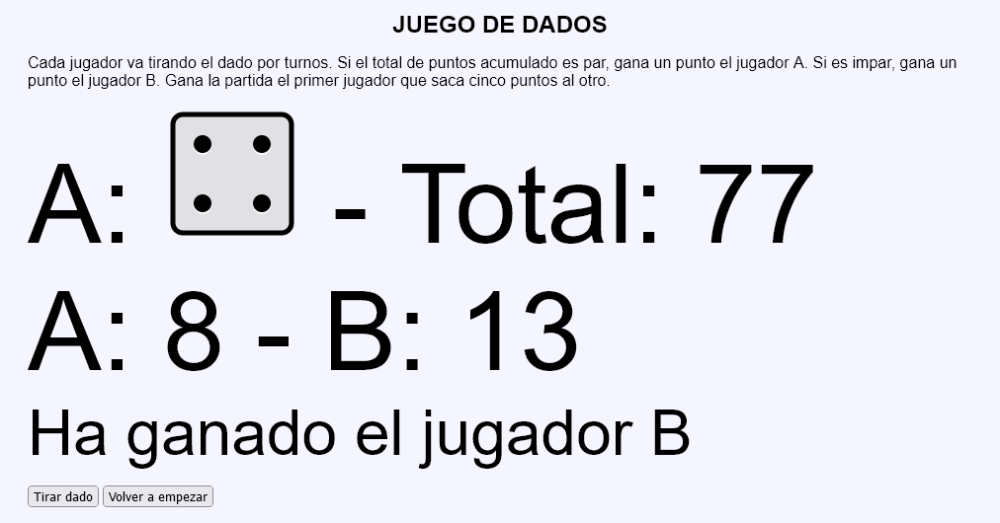
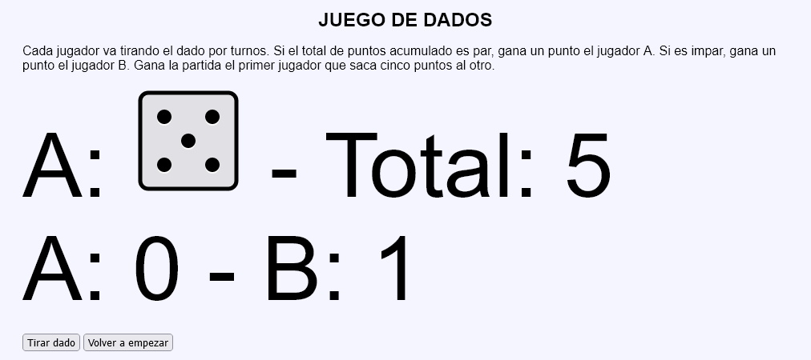

Juego de dados - Ejemplo de programa
Nota: El día del examen los alumnos no tienen acceso a este ejemplo, solamente tienen acceso a las capturas del apartado anterior.
Un ejemplo de programa puede probarse en la ventana siguiente:
En este ejercicio se debe crear un programa que simule un Juego de dados para dos jugadores.





<p style="font-size: 7em; margin: 0;">
A:
<img src="img/dados/4.svg" alt="4" width="140" height="140"> -
Total: 77
</p>
<p style="font-size: 7em; margin: 0;">A: 8 - B: 13</p>
<p style="font-size: 4em; margin: 0;">Ha ganado el jugador B</p>
Nota: El día del examen los alumnos no tienen acceso a este ejemplo, solamente tienen acceso a las capturas del apartado anterior.
Un ejemplo de programa puede probarse en la ventana siguiente: